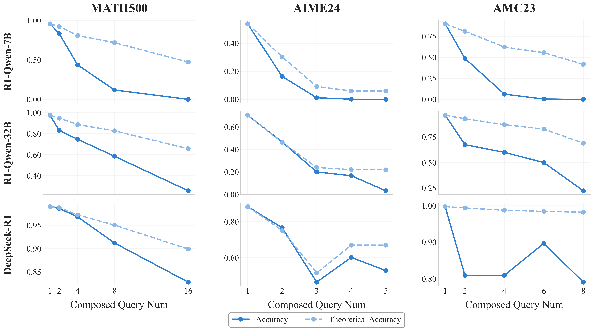

R-HORIZON
R-HORIZON
Abstract
Recent trends in test-time scaling for reasoning models (e.g., OpenAI o1, DeepSeek-R1) have led to remarkable improvements through long Chain-of-Thought (CoT). However, existing benchmarks mainly focus on immediate, single-horizon tasks, failing to adequately evaluate models’ ability to understand and respond to complex, long-horizon scenarios. To address this incomplete evaluation of Large Reasoning Models (LRMs), we propose R-HORIZON, a method designed to stimulate long-horizon reasoning behaviors in LRMs through query composition. Based on R-HORIZON, we construct a long-horizon reasoning benchmark, comprising complex multi-step reasoning tasks with interdependent problems that span long reasoning horizons. Through comprehensive evaluation of LRMs using the R-HORIZON benchmark, we find that even the most advanced LRMs suffer significant performance degradation. Our analysis reveals that LRMs exhibit limited effective reasoning length and struggle to allocate thinking budget across multiple problems appropriately. Recognizing these limitations, we use R-HORIZON to construct long-horizon reasoning data for reinforcement learning with verified rewards (RLVR). Compared to training with single-horizon data, RLVR with R-HORIZON not only substantially improves performance on the multi-horizon reasoning tasks, but also promotes accuracy on standard reasoning tasks (+7.5 on AIME2024). These results position R-HORIZON as a scalable, controllable, and low-cost paradigm for enhancing and evaluating the long-horizon reasoning capabilities of LRMs.

Overview
Recent advances in reasoning-focused language models (e.g., OpenAI o1, DeepSeek-R1) have demonstrated remarkable improvements through test-time scaling and long Chain-of-Thought (CoT). However, existing benchmarks primarily focus on immediate, single-horizon tasks, failing to adequately evaluate models' ability to handle complex, long-horizon scenarios.
To address these limitations, we introduce R-HORIZON, which:
- Transforms isolated problems into complex multi-step reasoning scenarios through query composition.
- Establishes the R-HORIZON Benchmark comprising 6 representative datasets from mathematics, code generation, and agent applications.
- Enables reinforcement learning with verified rewards (RLVR) using long-horizon reasoning data.
Evaluation Results
We evaluate 20+ state-of-the-art Large Reasoning Models (LRMs) on the R-HORIZON Benchmark, revealing a significant performance degradation as reasoning horizons increase. Key findings from our benchmark evaluation include:
- Universal Performance Degradation: Even the most powerful models suffer severe drops as problem count increases. For instance, DeepSeek-R1 drops from 87.3% (single problem) to 24.6% (5 problems) on AIME25.
- Model Size Matters: Larger models exhibit more resilience to multi-horizon challenges.
- Task-Dependent Degradation: Code generation tasks show steeper performance declines compared to mathematics. Many reasoning models lose their tool-calling abilities in web search scenarios.

Training with R-HORIZON
We use R-HORIZON composed data for Reinforcement Learning with Verified Rewards (RLVR). Training with this long-horizon data yields substantial improvements on both single and multi-horizon reasoning tasks, demonstrating the effectiveness of our method for enhancing LRM capabilities.
Training Results Highlights:
- Dual Performance Gains: Training with 2-composed problems significantly improves both multi-horizon reasoning (+17.4 points on AIME24 n=2) and single-problem performance (+7.5 points on AIME24 original).
- Scalable Complexity: Increasing composition complexity (n=4) enhances the model's ability to handle problems requiring more reasoning steps, achieving 50.6% on Math500 (n=8).

| MATH500 | AIME24 | AIME25 | AMC23 | Avg. | ||||||
|---|---|---|---|---|---|---|---|---|---|---|
| Origin | n=8 | Origin | n=2 | Origin | n=2 | Origin | n=2 | Origin | Multi | |
| R1-Qwen-7B | 93.6 | 11.8 | 48.3 | 16.4 | 33.3 | 3.5 | 90.2 | 48.8 | 66.4 | 20.1 |
| Baseline (n=1) | 95.6 | 8.4 | 57.9 | 16.7 | 47.9 | 5.1 | 95.9 | 55.0 | 74.3 | 21.3 |
| R-HORIZON (n=2) | 95.4 | 21.4 | 65.4 | 34.1 | 49.6 | 10.0 | 94.1 | 80.6 | 76.1 | 36.5 |
| R-HORIZON (n=4) | 94.6 | 50.6 | 62.9 | 34.8 | 45.4 | 8.1 | 91.9 | 79.1 | 73.7 | 43.2 |
Key Findings
1. Limited Effective Reasoning Length
As the number of interdependent problems increases, Large Reasoning Models (LRMs) struggle to maintain their performance. The gap between actual and theoretical accuracy widens significantly, indicating that models cannot sustain their original performance over longer reasoning horizons.
- Model errors stabilize within a certain context range. For instance, the smaller 7B model's primary error range is (4-6k tokens), while the larger 32B model's range is extended to (8-10k tokens), suggesting larger models possess a longer effective reasoning boundary.

2. Localized Reflection Behavior
Models' reflection frequency increases and then converges as the number of problems grows. However, over half of the complex tasks lack any long-range reflection (reflection that spans beyond the current problem), indicating that the reflection mechanism in current LRMs is highly localized and insufficient for long-horizon scenarios.

3. Inefficient Thinking Budget Allocation
Current mainstream LRMs, including state-of-the-art models like DeepSeek-R1, exhibit an inability to effectively allocate their thinking budget across the reasoning horizon. They tend to over-allocate tokens to early reasoning stages, failing to distribute resources reasonably to subsequent, critical problems.

4. Impact of R-HORIZON Training
Training models with R-HORIZON composed data (using Reinforcement Learning with Verified Rewards) promotes significantly more efficient and robust reasoning across multiple metrics:
- Improved Performance: Training significantly improves model performance on composed tasks and shows better generalization to longer horizons, while alleviating the "overthinking" phenomenon (generating shorter, more efficient responses).
- Better Allocation: Models learn a more reasonable token budget allocation across multi-step problems.
- Longer Reflection: R-HORIZON facilitates engaging in longer-range reflection with increasing frequency, directly improving performance on long-horizon reasoning.

BibTeX
@article{lu2025rhorizon,
title={R-HORIZON: How Far Can Your Large Reasoning Model Really Go in Breadth and Depth?},
author={Lu, Yi and Wang, Jianing and Guo, Linsen and He, Wei and Tang, Hongyin and Gui, Tao and Huang, Xuanjing and Cao, Xuezhi and Wang, Wei and Cai, Xunliang},
journal={arXiv preprint arXiv:[请替换为您的 arXiv ID]},
year={2025}
}